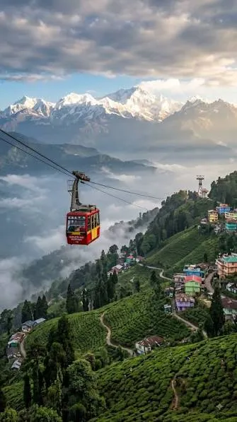
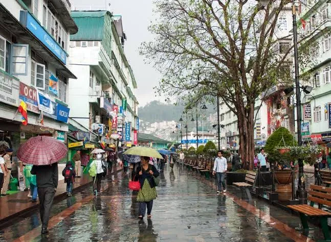
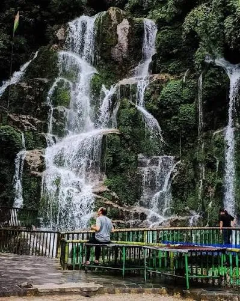
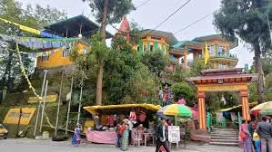

Sikkim · −21%
SIKKIM 2N-3D
Sikkim - The Himalayan Paradise
Overview
A Gangtok tour takes you to the vibrant hill capital of Sikkim, sitting at an altitude of 1,650 meters. Famous for its clean streets, panoramic Kanchenjunga views, and rich Buddhist culture, a typical trip involves scenic mountain drives, high-altitude lakes, and peaceful monasteries.
Journey highlights
- Rumtek Monastery
- MG Marg
- Tashi Viewpoint or Hanuman Tok
- Local Sightseen
Day by day
The itinerary
-
Day 1
iXB/NJP – GANGTOK TRANSFER & LOCAL SIGHTSEEING
Arrive at Bagdogra Airport (IXB) / NJP Railway Station and proceed towards Gangtok, enjoying a scenic drive through the Himalayan foothills, forests and mountain valleys. On arrival, check in to the hotel and relax. Later, explore the local attractions of Gangtok, including MG Marg, Lal Bazaar and nearby viewpoints. Enjoy the pleasant evening atmosphere of this beautiful hill capital.
Airport/Railway Pickup | Scenic Mountain Drive | Gangtok City | MG Marg | Himalayan Views
-
Day 2
GANGTOK – TSOMGO LAKE & BABA MANDIR EXCURSION
After breakfast, proceed for an exciting excursion to Tsomgo Lake, a stunning high-altitude glacial lake surrounded by snow-covered mountains. Continue to Baba Harbhajan Singh Mandir, a famous pilgrimage and tourist attraction in East Sikkim. If permitted and included in the itinerary, you may also visit Nathu La Pass, the historic Indo-China border point. Return to Gangtok by evening and enjoy leisure time at MG Marg.
Tsomgo Lake | Baba Mandir | Nathu La Pass* | Snow/Mountain Views | Scenic Photography | MG Marg
-
Day 3
GANGTOK – IXB/NJP DEPARTURE
After breakfast, check out from the hotel and proceed towards Bagdogra Airport/NJP Railway Station for your onward journey. Enjoy the beautiful mountain scenery along the way and conclude your memorable Sikkim holiday with wonderful Himalayan memories
Hotel Checkout | Himalayan Scenery | Mountain Views | IXB Drop / NJP Drop
Included
- Reserved vehicle for Transfer & Sightseeing.
- All sightseeing as per the Tour Itinerary.
- Night stay in Hotel
- Accommodation in Hotel What's Excluded
- Any personal expenses.
- All Taxes and Permits etc. for Darjeeling and Sikkim
- Any other not mentioned in includes Para.
Not included
- Any personal expenses.
- All Taxes and Permits etc. for Darjeeling and Sikkim
- Any other not mentioned in includes Para.
Gallery
Scenes from the route





Reserve this journey